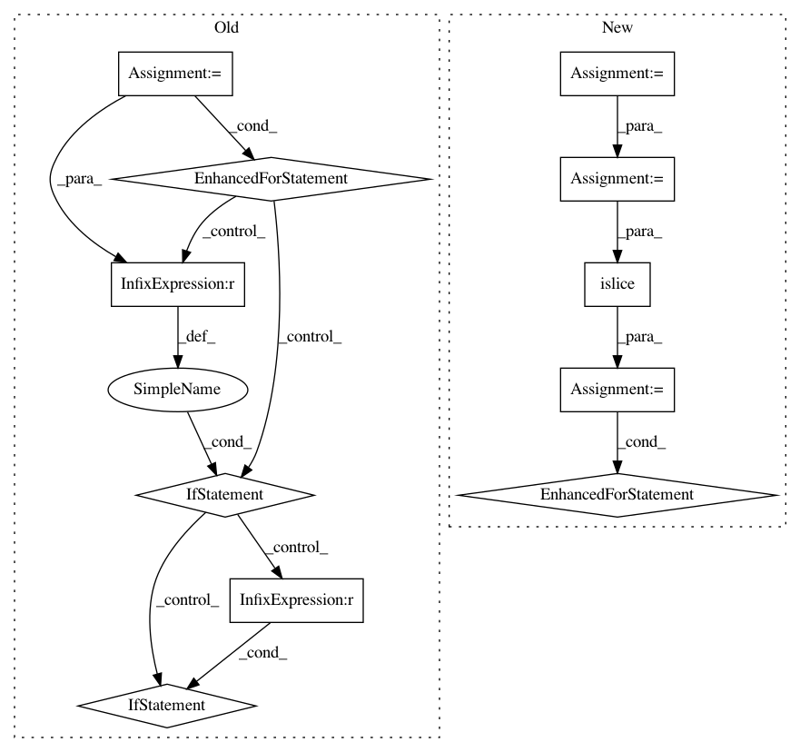

c3ca2456b96296326aa1d18f33ed72e8dd51ac5b,tensorflow_transform/analyzers.py,QuantilesCombiner,merge_accumulators,#QuantilesCombiner#Any#,1284
Before Change
def merge_accumulators(self, summaries_iterable):
graph_state = self._get_graph_state()
result = None
for summary in summaries_iterable:
if summary is None:
continue
else:
// This conversion is necessary to maintain compatibility with previous
// versions, and will be removed in future (0.15).
// TODO(b/127336397): Remove this.
if isinstance(summary, (six.binary_type, six.text_type)):
assert not summary
continue
with graph_state.lock:
if self._use_core_quantile_ops:
graph_state.thread_hostile_merge_inputs_callable(*summary)
if result is not None:
graph_state.thread_hostile_merge_inputs_callable(*result) // pylint: disable=not-an-iterable
else:
graph_state.thread_hostile_merge_inputs_callable(summary)
if result is not None:
graph_state.thread_hostile_merge_inputs_callable(result)
result = graph_state.thread_hostile_flush_summary_callable()
return result
def extract_output(self, summary):
graph_state = self._get_graph_state()
After Change
// there are less than N remaining. N=100.
result = self.create_accumulator()
// Make sure summaries is an iterator (so it remembers its position).
summaries = iter(summaries)
graph_state = self._get_graph_state()
while True:
batched_summaries = list(itertools.islice(summaries, 100))
if not batched_summaries:
break
with graph_state.lock:
if self._use_core_quantile_ops:
graph_state.thread_hostile_merge_summary_callable(*result)
for summary in batched_summaries:
graph_state.thread_hostile_merge_summary_callable(*summary)
else:
graph_state.thread_hostile_merge_summary_callable(result)
for summary in batched_summaries:
graph_state.thread_hostile_merge_summary_callable(summary)
In pattern: SUPERPATTERN
Frequency: 3
Non-data size: 11
Instances
Project Name: tensorflow/transform
Commit Name: c3ca2456b96296326aa1d18f33ed72e8dd51ac5b
Time: 2019-09-01
Author: tf-transform-dev@google.com
File Name: tensorflow_transform/analyzers.py
Class Name: QuantilesCombiner
Method Name: merge_accumulators
Project Name: chartbeat-labs/textacy
Commit Name: 41416dec1bc3ec7d8bf163842591d1a356830f8c
Time: 2019-05-09
Author: burtdewilde@gmail.com
File Name: textacy/corpus.py
Class Name: Corpus
Method Name: get
Project Name: chartbeat-labs/textacy
Commit Name: 41416dec1bc3ec7d8bf163842591d1a356830f8c
Time: 2019-05-09
Author: burtdewilde@gmail.com
File Name: textacy/corpus.py
Class Name: Corpus
Method Name: remove